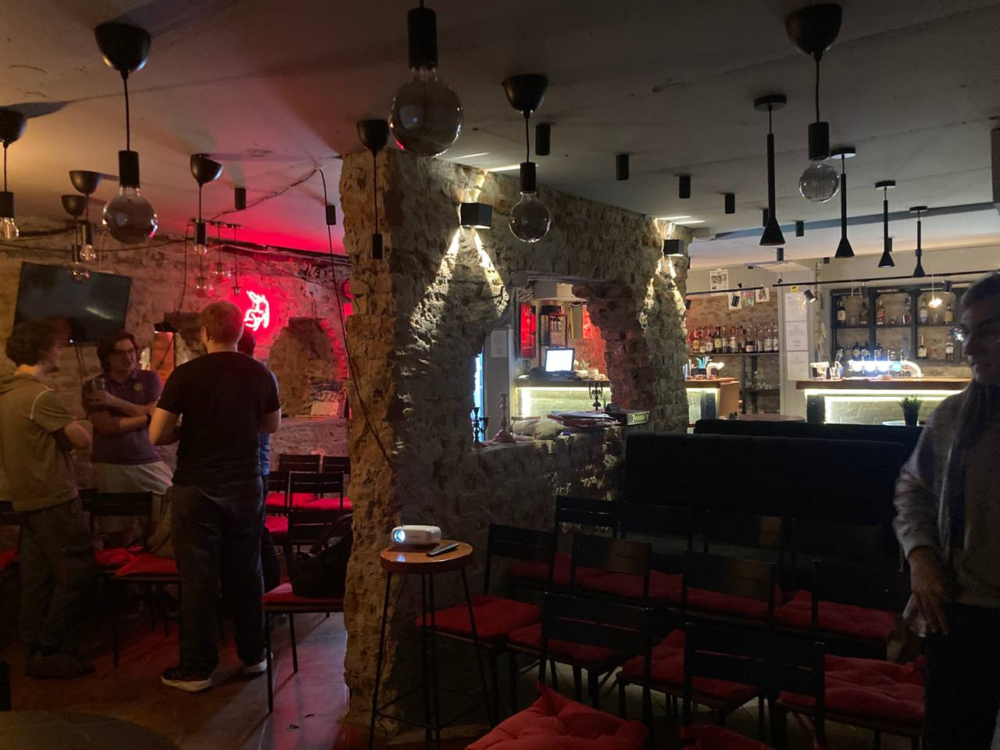
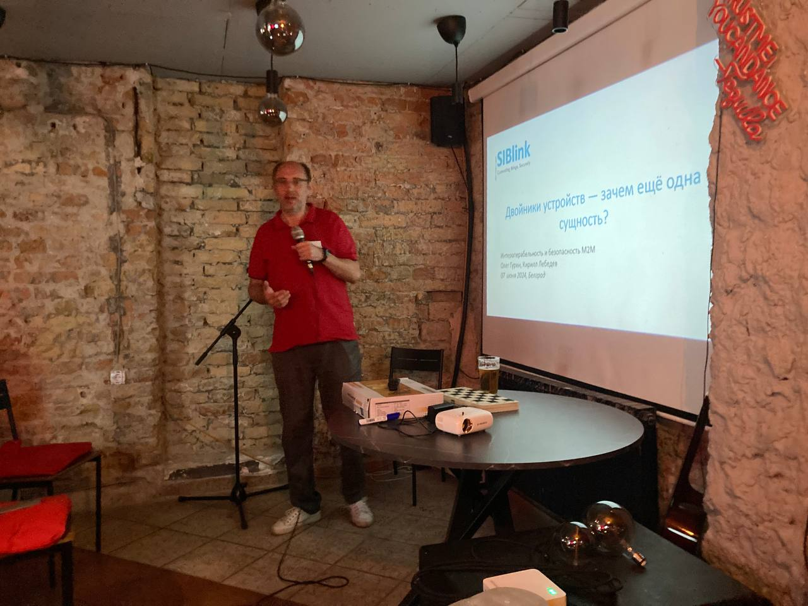

Embedded bar ↵
Embedded bar¶
{kind=link}
Почему все современные митапы такие скучные?
Потому что там нет пива!
На время мероприятия наш офис (или любая другая площадка) превращается уютный бар, где можно зацепить пинту пива, послушать истории и пообщаться с коллегами из Embedded тусовки.
Про что это мероприятие?¶
Если коротко - то про общение. Да, у нас есть доклады, где спикеры рассказывают классные истории и делятся полезными вещами, но самое интересное происходит между ними.
Как проходит стандартный Embedded bar?¶
Знакомство и пиво¶
Мы собираемся, пьём пиво с пиццей, рассказываем о себе и делимся последними новостями и байками
Доклады спикеров¶
Слушаем доклады участников, с перерывами на вопросы и обновление бокалов.
Афтепати¶
Обсуждение докладов, вечеринка.
Хоть это и бар, алкоголь не обязателен к употреблению, можно пить безалкогольный алкоголь или даже сок! Главное - атмосфера. Это место для непринуждённого общения, задушевных бесед с друзьями и коллегами до ночи.
Где проходит Embedded bar¶
Ищи ближайшие локации и даты в разделе Найти бар. Чтобы не пропустить анонсы новых мероприятий - подписывайся на Embedded bar канал в телеграме. Хочется выступить - пиши организатору.
Если ближайший бар слишком далеко, возможно, пора организовать его самостоятельно! Подробные инструкции в разделе Инструкции, помимо этих материалов, другие организаторы всегда готовы помочь провести мероприятие.
Найти бар ↵
Ended: Найти бар
Ended: Embedded bar
Правила Embedded bar¶
- Разрешено всё, что не запрещено
- Embedded bar - некоммерческое мероприятие.
- Если посетители бара оплачивают билеты, то стоимость билетов рассчитывается исходя из прямых затрат. Например, если вы договорились принести пиво и еду с собой - билеты могут быть бесплатными.
- Организаторы не получают деньги за свою работу.
- Выступающие с докладом не получают денег за своё выступление.
- Можно дарить на память мерч бара или что-то приятное.
- Выступления в баре
- Выступающий несёт пользу сообществу и должен быть действительно хорош.
- Выступление не может содержать рекламы коммерческой компании, услуги, продукта, самого спикера.
- Выступления и комментарии посетителей не записываются и не транслируются, без специального решения спикера и организатора.
- Организатор должен отдавать предпочтение спикерам не из компаний, с которыми он связан.
- Организатор может отказать посетителю бара без объяснения причин.
- Бар - не место для обсуждения политики и религии.
- В случае недомогания следует воздержаться от посещения бара.
Инструкции ↵
Вступительная речь¶
Для вступительной речи, как и для всех докладов, обязательно готовится презентация.
Структура выступления:¶
- Приветствие, само-представление ведущего
- Что такое Embedded bar
- Какие бывают доклады
- План мероприятия
- Организационные моменты
- Куда идти
- Где еда, напитки
- Где туалеты
- Где курить
- Представить помощников ведущего
- План на следующие мероприятия
- Представление докладчиков вечера
- Призыв потратить время до первого доклада на знакомство с новыми людьми
Пример презентации лежит в папке /attachments
Как проходит бар¶
Пример плана мероприятия:¶
- 19:00 – 19:30 Сбор гостей
- 19:30 – 20:00 Начало / знакомство
- 20:00 – 21:30 Доклады (3-4 слота по 30 минут)
- 21:30 – 23:00 Вечеринка
Стандартное расписание мероприятия рассчитано на 4 часа. При начале в 7 часов вечера закончить мы должны в 11. Впрочем, я не припомню хотя бы одного раза, чтобы все разошлись в назначенное время.
Сбор гостей (00:30)¶
Гости приходят в бар, на входе их надо встречать, отмечать в списке гостей. Хорошо выдавать наклейки с именами, либо писать маркером на пустых наклейках. Так гостям будет легче знакомиться. Гости свободно перемещаются, осваивают пространство, наливают напитки, общаются в ожидании начала мероприятия. На проекторе - первый слайд вводного выступления.
Начало/знакомство (00:30)¶
Через полчаса после начала на сцену выходит ведущий мероприятия, просит всех занять свои места. Вступительная речь ведущего покрывает вопросы: что такое бар, как будет проходить мероприятие, где найти еду и напитки, где курить, где туалет, к кому обращаться, если нужна помощь. Затем идёт краткое представление спикеров этого вечера и тем их выступлений. Ведущий заканчивает вводную часть наставлением: посвятить ближайшие тридцать минут знакомству с любым незнакомым человеком на мероприятии.
Доклады (N x 00:30)¶
Перед каждым Выступлением ведущий представляет спикера и тему, разбавляя шутками. После каждого выступления обязательно выделить время на обмен мнениями и долив напитков. При регламенте 10 минут на доклад + 10 минут на вопросы, на каждого спикера закладываем по 30 минут.
Вечеринка (1:30+)¶
Когда все выступления закончились, гостей можно оставить в покое и предоставить самим себе, они найдут о чём поговорить.
Когда время вышло, остаётся просто прогнать самых выносливых восвояси и закрыть помещение. Бар удался.
Памятка спикера Embedded bar¶
Почему стоит выступить в баре?¶
Самое главное - потому что это почетно.
Мы собираем классную аудиторию и создаём комфортную атмосферу, чтобы спикерам было легко и приятно выступать. Аудитория мероприятия – разработчики уровня middle и выше, менеджеры и C-Level (руководители), инвесторы.
О чем можно рассказать?¶
В целом, о чем угодно. Если это как-то связано с Embedded.
- Про разработку.
- Про производство.
- Про тестирование.
- Про управление проектами.
- Про новые и интересные технологии.
- Ну вы поняли…
Лучше всего «заходят» интересные истории и «кейсы», то есть личный опыт, а не просто информация из книг или интернета. Главное, чтобы было интересно и весело. Представьте, что вы рассказываете историю друзьям в баре, а не на Съезде КПСС.
Какую тему выбрать?¶
Обычно, мы формируем какую-то тему и стараемся все доклады подвести под эту тему. Но иногда с этим возникают проблемы и мы, наоборот, отталкиваемся от докладов спикеров. Или воруем тему у кого из спикеров (да, такое тоже бывает). Если сомневаетесь – напишите, подумаем вместе.
Нужно делать презентацию?¶
Если коротко – да. Презентация помогает усилить ваш рассказ образами, объяснить сложные вещи при помощи схем или инфографики и создать «реперные точки» в вашем рассказе. Базовые рекомендации по презентации – меньше текста, больше визуала. Главное – найти баланс между ценностью информации и когнитивной нагрузкой, чтобы ее усвоить. Другими словами – если презентация отвлекает от вашего рассказа, то это плохая презентация. Хорошая презентация помогает и усиливает доклад. Используйте это.
Что нужно для анонсов?¶
- Коротко о вас – Как вас зовут, где вы работаете и чем там занимаетесь?
- Тема доклада.
- Тезисы или короткое описание доклада длиной в один абзац.
- Портретная фотография хорошего качества.
Как готовиться?¶
Тут есть хороший материал - Памятка выступающему (Андрей Скворцов, Алексей Каптерев)
Сколько должен длиться доклад?¶
10-15 минут на выступление + 10 минут на вопросы.
Будет ли репетиция?¶
Да, за неделю до выступления мы делаем онлайн прогон всех докладов. Даём рекомендации по визуальной части доклада и подсвечиваем непонятные места.
Сводная таблица¶
| Город | Название | Пиво | Стоимость | Площадь зала, м2 | Общая площадь, м2 | Вместимость, человек |
|---|---|---|---|---|---|---|
| Санкт-Петербург | Офис Третий пин | Кейтеринг | 0 | 51 | 133 | 50 |
| Москва | LOFT HOUSE | бар | 30000₽ | 90 | 130 | 45 |
| Белград | бар М10 | бар | 0 | 61 | 100 | 40 |
Поиск помещения¶
Критерии:
- Наличие Пива, желательно разливного (настоящий бар, кэйтеринг или бутылки, в порядке ухудшения)
- Вентиляция, кондиционеры
- Проектор или большой экран
- Стулья и место для их размещения
- Пространство для общения
- Звук, если народу больше 10 человек (2 микрофона и усилитель)
- Туалеты
Примеры помещений¶
Санкт-Петербург, офис Третий пин¶

- Помещение для докладов 56м^2
- Помещение для общения и бара 52м^2
- Вспомогательные помещения 25м^2
- Вместимость - до 50 человек
- Стоимость - бесплатно, компания - организатор
Спикер:
{kind=link}
Зона общения:
{kind=link}
Зал для докладов:
{kind=link}
Москва, LOFT HOUSE¶
{kind=link}
- Лофт с панорамным видом на реку, рядом с Крокус экспо
- 2 зала 90 и 40 кв.м
- Собственная веранда
- Вместимость до 45 человек
- Можно шуметь 24 часа
- 1 кВатта звука
- Плазма, караоке, проектор
- Панорама на реку
- Система кондиционирования
- Стоимость 5000₽/час, минимум 6 часов (30000₽)
Белград, бар М10¶

- Помещение для докладов 41+20м^2
- Помещение для общения и бара 10,5+11м^2
- Вспомогательные помещения 16м^2
- Вместимость - до 40 человек
- Стоимость - бесплатно, бар продавал напитки и снеки
Вид от проектора: 
{kind=link}
Спикер: 
{kind=link}
Работа со спикерами¶
Где их искать¶
- Собственная сеть контактов
- Сеть контактов всех, кто знает про Embedded bar
Тут главное начать. Потом люди сами хотят выступить и проблем с поиском не возникает. На вечер хорошо иметь 3-4 спикера, не больше. Мы же не хотим чтобы это превратилось в конференцию!
Выбор темы¶
Итак, крутые спикеры найдены. Надо разослать им Памятку спикера Embedded bar.
Иногда тема не приходит сама, нужна помощь. Поговорить со спикером, часто человек с удовольствием сам начинает делиться тем, что любит, или что его волнует. Про это и надо рассказывать.
Практика показывает, что пытаться сделать мероприятия едиными по тематике - не обязательно. Пусть будет как в анекдоте (для вас - наш новый журнал "Слоны и поезда"). Круто, если доклад раскрывает какую-то неочевидную, редкую тему. Но так же круто, если это факап на ровном месте. Слишком узкоспециализированный доклад может не зайти, людям "не в теме" тоже должно быть понятно о чём идёт речь. Обсудить глубокие темы можно будет с теми, кто подойдёт в перерыве.
Темы (и примеры выступлений):
- Факапы
- Технические (Александр Лапетов "Факапы разработки для крупносерийного производства: каждый день сюрприз.")
- Организационные (Дмитрий Королёв "О том как не стоит вести работы, где ты один из подрядчиков")
- Экскурс в тему
- Технические (Михаил Коробков "Программируемая логика")
- Организационные
- Процессы (Александр Борисов "Эволюция процесса разработки электроники")
- Команда (Иван Абашкин "Работа с противоречиями в принятии решений_")
- Карьера и жизнь (Иван Покровский "Возможности карьеры и предпринимательства для разработчиков электроники.")
- Стартап, проект (Александр Чистов "Путь медтех стартапа от идеи до реализации.")
- DIY (Иван Ларионов "Xyak Xyak и готово!")
- Наука и техника (Андрей Серяков "астробиология или поиск новых обитаемых миров")
Прогоны¶
Спикеры могут быть разного уровня подготовки, но на баре все они должны блистать. Добиться этого можно совместными усилиями. Спикерами не рождаются, всё приходит с практикой.
План¶
- small talk
- Рассказать про цели прогона: мы хотим помочь спикеру выступить максимально интересно, наши советы не являются указаниями как и что делать. Задачи:
- Потренироваться
- Проверить, что мы попадём в тайминг (15 минут)
- Выявить логические разрывы в рассказе
- Посмотреть слайды
- Засекаем время
- Слушаем докладчика, делаем пометки с замечаниями у себя
- Даём обратную связь, слушаем ответы, вместе ищем как улучшить доклад.
- В докладе не должно быть рекламы и продвижения товаров или компании. Исключение - представление спикера во вступлении к докладу.
- По слайдам - см.[[Памятка спикера Embedded bar#Нужно делать презентацию?]]
- Договариваемся
- о следующем прогоне, если он нужен
- о времени, когда надо прислать исправленную презентацию
Кто должен быть на прогоне¶
Обычно они проходят с глазу на глаз, организатор+спикер. Иногда бывает полезно позвать кого-то ещё на помощь.
Рассылки¶
Список отправляемых писем¶
Письмо 1¶
Общий анонс мероприятия и приглашение выступить или позвать спикера в бар. Адресная книга – Общий список адресов. За 3-5 недель до мероприятия.
Пример рассылки:¶
Картинка
Здесь должен быть какой-то интересный, захватывающий, интригующий, противоречивый, заигрывающий, изящный, душевный, неочевидный, умопомрачительный, загадочный, колоссальный, непосредственный, уверенный, необыкновенный, немыслимый, грандиозный, функциональный, эстетический, поразительный текст с приглашением на шестую встречу Embedded бара. Но вместо этого будет только одно слово - Приходите. 17 февраля в 19:00. В нашем офисе на Белоостровской 23. Тему и спикеров пока не придумали, но когда это вас останавливало. Билеты по ссылке ниже. До 5.02 - по льготной цене. Если вы хотите выступить или можете кого-то порекомендовать - напишите в телеграме @orginizer_tg, договоримся. До встречи. Купить билет
Письмо 2¶
Повторный анонс мероприятия, когда состав спикеров уже утвержден.
- За 2-3 недели до мероприятия.
- Адресная книга – Общий список адресов.
Письмо 3¶
Напоминание о мероприятии с указанием организационной информации.
- За день до мероприятия.
Пример рассылки:¶
Картинка
Embedded bar уже сегодня.
Ждём вас в 19:00 по адресу: Санкт-Петербург, Белоостровская 23. Вход с улицы под коричневый козырёк. Звонок слева от двери. По любым организационным вопросам пишите @orginizer_tg. Viva La Embedded Bar!`
- Адресная книга – участники конкретного мероприятия (создаётся после закрытия регистрации)
Письмо 4¶
Письмо с благодарностью участия и просьбой оставить обратную связь.
- Через 3-5 дней после мероприятия.
Чеклист перед началом мероприятия¶
- Подключить проектор
- Подключить ноутбук с возможностью трансляции по HDMI
- Подключить микрофоны, проверить звук (проверить наличие запасных батареек)
- Подключить кликер
- Проверить наличие презентаций на компьютере (спикеры, общая), проверить на проекторе с кликером
- Подготовить гостевые ключи
- Подготовить помещение, где будет располагаться бар (убрать ненужную мебель, расставить нужную)
- Подготовить помещение для выступлений (убрать ненужную мебель, убрать вещи, расставить стулья)
- Включение вентиляции на максимум
- Распечатать список участников для регистрации на входе
- Распечатать бейджики на клейких наклейках, либо приготовить наклейки и маркеры
- Приготовить подарочные бокалы для спикеров (по количеству спикеров)
Ended: Инструкции
Работа с документацией¶
Локальное разворачивание документации¶
- Создайте окружение python:
python -m venv venv
- Активируйте окружение:
source venv/bin/activate
- Установите пакеты для сборки документации:
pip install -r requirements.txt
- Соберите документацию:
mkdocs serve
- Откройте в браузере адрес: http://127.0.0.1:8000/